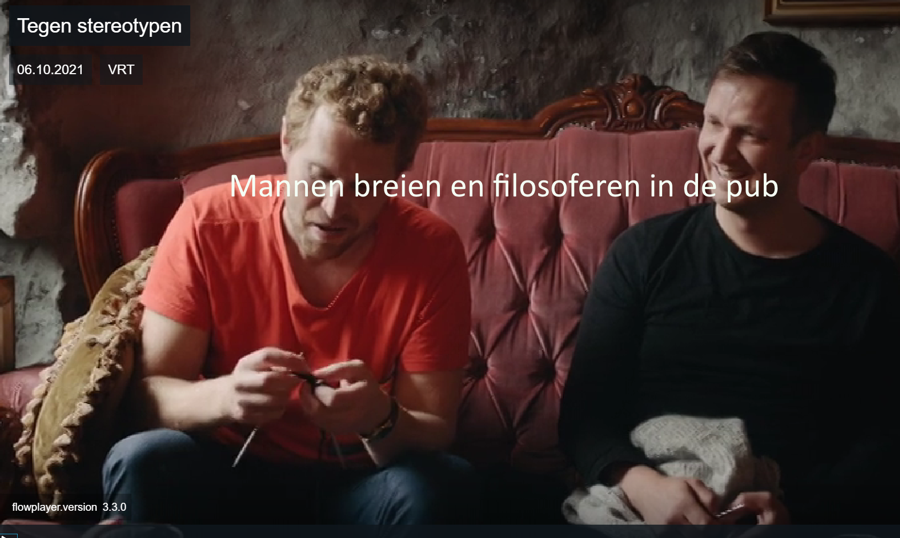

In een lokale pub komt elke week een groepje mannen bijeen om er te filosoferen en te breien.
| Interviewer | Mannen in de pub | ||
|---|---|---|---|
| Ik dacht: Mannen in IJsland, dat zijn sterke Vikings. | We zijn zover gekomen dat we 'sterk zijn' niet meer definiëren binnen een genderrol. Op sommige momenten voel ik me zwak, en op andere momenten sterk. Cultuur heeft mensen ertoe aangezet te denken dat het met geslacht te maken heeft. Maar dat is niet zo. Hetzelfde met breien. Ik vind dat mannelijk. Je maakt iets wat nuttig is. Het is niet makkelijk. Er is tijd en inzet voor nodig. Je moet er sterk voor zijn. Kennis en kracht. Mijn handen worden moe. Ik weet niet waarom we het als iets beschouwen dat vrouwelijk is. Want honderd jaar geleden moest iedereen breien in IJsland. Mannen hebben hier altijd gebreid. Ze gingen vissen, maar als het slecht weer was, konden ze de zee niet op en zaten ze binnen te breien. In IJsland is men in de 16e eeuw beginnen te breien. | ||
| Vind je het goed dat vrouwen even sterk zijn als mannen in IJsland | Je kunt niet altijd sterk zijn, of altijd zwak zijn. Als je voor jezelf toelaat je gevoelens waar te nemen en ze te uiten, dan voel je je veel beter. We hebben allemaal gevoelens. Dat is gewoon zo, maar door typische genderrollen is het sociaal niet altijd aanvaard dat je ze uit. | ||
| Zou je kunnen leven in een wereld waar mannen de baas zijn? | Dat zou een vreselijke plek zijn. Ik ben op zulke plekken geweest en soms is dat fijn, maar niet altijd. Ze zitten vast in een denkpatroon van: zo moet het zijn, want ik ben de baas. Dat is raar. Als maar de helft van de samenleving over alles beslist, dan zal nooit iedereen gelukkig zijn in die maatschappij. Iedereen moet zijn zeg kunnen hebben en iedereen moet kunnen doen waar hij goed in is. Wat je gender ook is. Ik denk dat evenwicht het sleutelwoord is. | Ja, maar dat is heel moeilijk. | Om een evenwicht te hebben? Het leven is lastig. Het is een uitdaging |